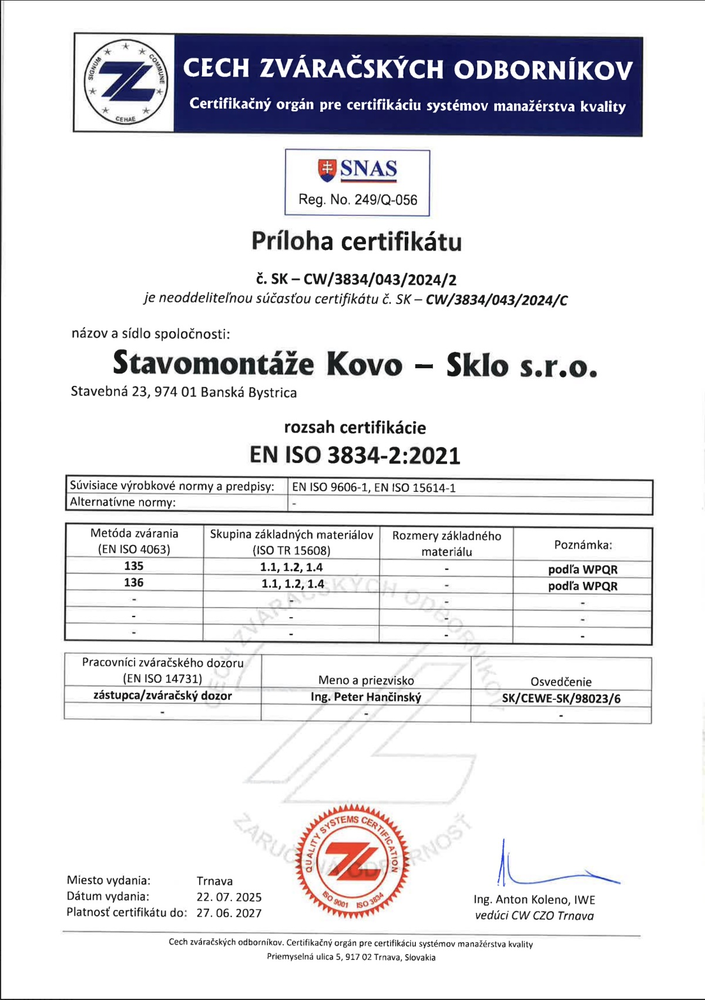
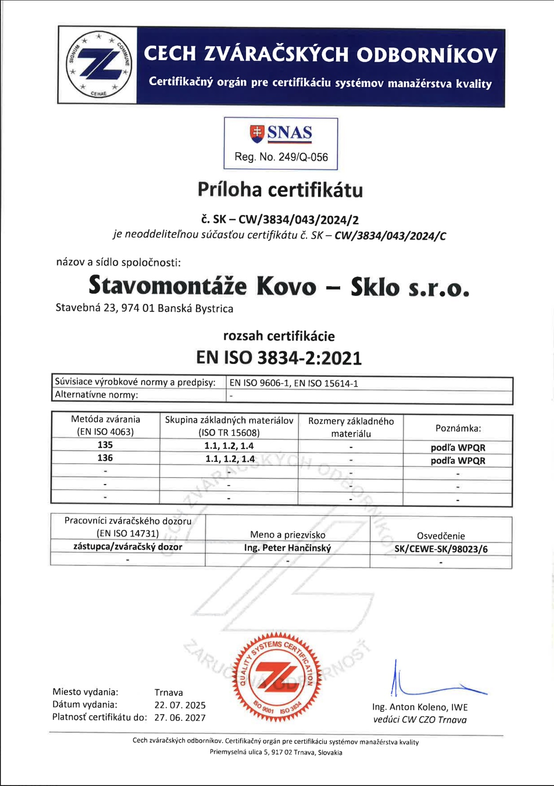

Stavomontáže, Kovo-Sklo s.r.o.
Stavomontáže, Kovo-Sklo s.r.o. je firma s dlhoročnými skúsenosťami v oblasti výroby a montáže oceľových konštrukcií všetkých typov. Od jednoduchých zámočníckych výrobkov až po oceľové konštrukcie veľkých priemyselných objektov.
Oceľové konštrukcie sa v priestoroch firmy v Banskej Bystrici vyrábajú už viac ako 40 rokov.
Vďaka vlastnej výrobe je firma schopná flexibilne reagovať na požiadavky zákazníkov a pružne prispôsobiť termíny spracovania zákaziek.
Náš cieľ je prvotriedna kvalita spracovania oceľových konštrukcií a tiež povrchovej úpravy.
Každý z našich zákazníkov má možnosť konzultovať všetky svoje dotazy s kvalifikovanými technikmi, ktorí Vám radi poradia s návrhom a realizáciou vášho projektu.
Vďaka našim skúsenostiam v oblasti oceľových a zámočníckych konštrukcií Vám ponúkneme optimálne riešenie s ohľadom na cenu, pri zachovaní vysokej kvality.
Priaznivé hospodárske výsledky, záruka kvality vlastnej produkcie, dodržania termínov realizácií a plná záruka za vykonané práce a diela ju predurčujú ako správnu voľbu pre realizáciu Vašich stavebných zámerov a projektov v oblasti oceľových konštrukcií, zámočníckych výrobkov v súkromnom aj priemyselnom sektore. Ku každému projektu pristupujeme osobne a individuálne, každé zadanie je pre nás výzvou, ktorá nás posúva vpred.
Budeme radi, ak sa našim obchodným partnerom stanete aj Vy.
 
